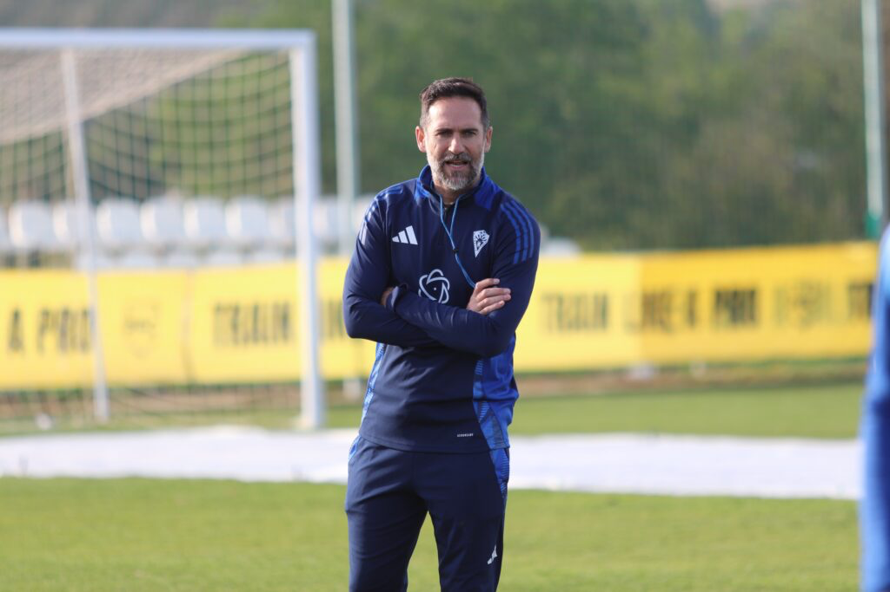

Abel Segovia firmará como nuevo entrenador del Xerez CD hasta el final de temporada

Foto: Marbella CFEl técnico resuelve finalmente el proceso de negociación mantenido con la directiva azulina y se convierte en el sucesor de Xavi Molist
El Xerez CD pondrá fin en las próximas horas a la incertidumbre vivida en su banquillo durante la última semana. Abel Segovia firmará como nuevo técnico del primer equipo hasta el término de la presente temporada, según ha podido confirmarse, cerrando así un proceso de negociación que se había dilatado en los últimos días. Se desconocen, por el momento, las condiciones concretas del contrato suscrito entre ambas partes.
Un acuerdo que finalmente llega a buen puerto
El club jerezano y el técnico han alcanzado finalmente un entendimiento que permitirá a Segovia hacerse cargo del vestuario azulino con la totalidad de la presente temporada por delante, tras varios días de conversaciones para cerrar los términos de su llegada.
Sucesor de Xavi Molist
El nuevo entrenador releva así a Xavi Molist, destituido tras la derrota cosechada en el feudo del Recreativo de Huelva, resultado que dejaba al conjunto jerezano con solo dos puntos de doce posibles y en puestos de descenso tras las cuatro primeras jornadas del Grupo 4 de Segunda RFEF.
Debut inminente ante el Tenerife B
Abel Segovia dispondrá de escasos días para preparar su primer encuentro al frente del Xerez CD, que llegará ya el próximo domingo con la visita del Tenerife B a Chapín. Un estreno con la presión añadida de tener que revertir cuanto antes una dinámica de resultados que ha encendido las alarmas entre la afición azulina en el arranque liguero.
🇬🇧 Read in English ← Volver a la portada